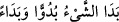
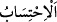
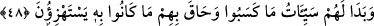

“
” bir şey apaçık bir şekilde ortaya çıktı demektir. “
” ise
zannettiği şeylerin arasına girdiği düşüncesiyle bir şeye önem verip saymak demektir.
Yâni kıyamet günü dünyada iken hiç önem verip hesap etmedikleri, başlarına geleceğini
düşünmedikleri türlü türlü azaplar ortaya çıkacaktır.
Kâşifî der ki: “Onlar öyle zannettiler ki putların şefâati vesilesiyle yakınlık
mertebesine erecekler.”
48. Onların kazandıkları kötülükler (o gün) açığa çıkmış, alaya aldıkları şey,
kendilerini sarmıştır.
“Onların kazandıkları kötülükler (o gün) açığa çıkmış,” amel defterleri önlerine
konulduğu vakit amellerinin ya da kazandıklarının kötü olanları kendilerine âşikâr
olmuş, “alaya aldıkları şey, kendilerini sarmıştır.” Alaylarının vebâli, tuzaklarının
cezâsı onları bulup başlarına inmiş ve onları çepeçevre kuşatmıştır. Onlar Kitap’la,
müslümanlarla, yeniden diriltilme, azab ve benzeri hususlarla alay edip dururlardı.
Bu âyet, öyle bir tehdiddir (vaîd) ki bundan daha ötede tehdîd yoktur. Bunun vaaddaki
benzeri ise “Onlar için ne mutluluklar saklandığını hiç kimse bilemez.” (es-Secde,
32/17) âyetidir.
et-Te’vîlâtü’n-Necmiyye’de der ki: “Bu âyeti işitmek kalp gözü açık olanlar (ashâb-ı
intibâh) için nice hasret ve pişmanlıklara sebep olur.
Bir rivâyete göre âhirette günahkâr müslümanlardan bir topluluğun ateşe atılması
emredilir. Oraya vardıklarında Mâlik onlara: “Siz kimsiniz? Sizden önce gelen
cehennem ehlinin yüzleri kapkara, gözleri de gömgök idi. Sizde bu sıfatlar yok.” diye
sorunca onlar: “Biz seninle karşılaşacağımızı beklemiyorduk, bizim beklediğimiz başka
bir şeydi!” derler. Bunun üzerine Allah Teâlâ şöyle buyurur: “Onların kazandıkları
kötülükler (o gün) açığa çıkmış, alaya aldıkları şey, kendilerini sarmıştır.”
Ebü’l-Leys der ki: “Yâni, onlar sevap alacaklarını sandıkları birtakım ameller
yaparlar. Allah’a ortak koşmakla birlikte yapıldığı için bu amellerin onlara faydası
olmaz. Onlar için sevap yerine azap ortaya çıkar.
Keşfü’l-esrâr’da ise şöyle der: “Hz. Peygamber’den bu âyetin tefsirini sordular, şöyle
buyurdu: “Bunlar onların iyilik zannettikleri, fakat (mîzanın) kötü ameller kefesinde
buldukları amellerdir.”
Bâzıları der ki âyetin zâhiri riyâ ve süm’a ehli/görsünler ve duysunlar diye amel
edenlerle ilgilidir. Onlar kıyamet günü ihlâs sâhiplerinin yanında rezil olacaklardır.
Rivâyet edilir ki Süfyân Sevrî (r.h.) bu âyeti okumuş ve üç defa “Yazıklar olsun
riyâkârlara!” demiştir.